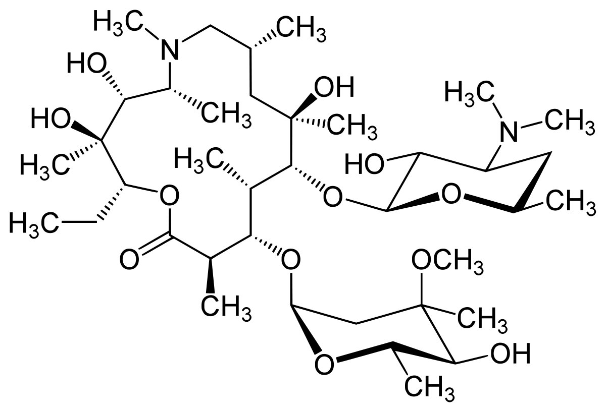

Азитромицин (Azithromycin) инструкция по применению
Брутто-формула C38H72N2O12
Показания препарата Азитромицин
- инфекции верхних дыхательных путей и ЛОР-органов: фарингит, тонзиллит, синусит, средний отит;
- инфекции нижних дыхательных путей: острый бронхит, обострение хронического бронхита, пневмония, в т.ч. вызванная атипичными возбудителями;
- инфекции кожи и мягких тканей: угри обыкновенные средней степени тяжести, рожа, импетиго, вторично инфицированные дерматозы;
- начальная
стадия болезни Лайма(боррелиоз) - мигрирующая эритема (erythema migrans); - инфекции мочеполовых путей, вызванные Chlamydia trachomatis (уретрит, цервицит).
Бактериальная восприимчивость
Азитромицин обладает относительно широкой,u но неглубокой антибактериальной активностью.Он подавляет некоторые грамположительные бактерии, некоторые грамотрицательные бактерии и многие атипичные бактерии. В 2015 году среди населения был обнаружен штамм гонореи, обладающий высокой устойчивостью к азитромицину. Neisseria gonorrhoeae обычно чувствительна к азитромицину, но этот препарат не широко используется в качестве монотерапии из-за низкого барьера для развития устойчивости. Широкое применение азитромицина привело к росту устойчивости Streptococcus pneumoniae
Бактериальная восприимчивость
Азитромицин обладает относительно широкой, но неглубокой антибактериальной активностью. Он подавляет некоторые грамположительные бактерии, некоторые грамотрицательные бактерии и многие атипичные бактерии.